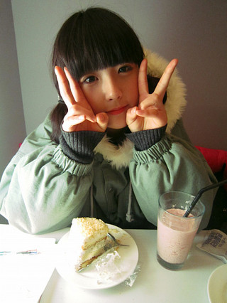

上中学的有一天，我无意中闻到自己腋下有臭味，当时我就意识到自己可能得了狐臭。 但是我的父母，乃至爷爷奶奶，外公外婆，叔叔阿姨，舅舅姑姑，都没有。但是有一个人有，那就是我外公的弟弟。也就是说，这东西隔了老远遗传到了我身上。
在这个社会里，如果有这个毛病，就被人看不起，就好像出身不好，人们都是要指指点点。 所以我尽量把自己打扫干净，抹上种种药品、风油精、花露水。我不敢告诉父母，怕难为情，父母也是粗心的父母，忙于生计。

有一天，条件不允许，我没有洗澡，而我又和一个男同学一起出黑板报。那个男孩闻见了这种味道。一直以来，我出现在同学们面前的形象就是优秀、要强、自信。 然而，这些并没有使得同学们尊重我，相反，似乎人人都等着我出丑的时机。
第二天，所有的男生都知道了这件事情。整整两年的时间，每次当他们走过我身边的时候，都是要吐一口口水在地上，有时还说一句：真臭。 可怜的我很单薄，自尊心又强，我从来没有和任何人谈起这件事情。有一天，我再也承受不了，由于我回到家，打开收音机，痛声大哭。妈妈回来了，心疼地问怎么回事，我把事情的经过说了，妈妈极力否认，觉得决不可能。爸爸回来了，决定找老师谈谈，我说，我们先到医院去看看吧，有了结论好有说服力，在我的心里，我非常非常的希望我没有狐臭。
医生检查了，只是目测说：根据我的经验，你没有狐臭。只是经验而已，但是出汗时的味道却是真真切切的。我想老师并没有帮助到我，因为接下来的半年多，那些男同学始终没有放过我，其中还包括那些自己本身有狐臭的男生，他们自欺欺人地作践我的自尊。而弱小的我只是眼睁睁地坐等伤害。
也许这是性格的悲剧，我始终忍受那么久那么残忍的精神强暴。强暴者们感到前所未有的快乐。他们无望的学业生涯终于有了乐趣。我之所以忍受这一切，那是因为我自己承认这一切，而又不愿意别人承认，自己承认狐臭的存在是可耻的，但是，我不承认自己有狐臭。这样矛盾着，就好像一个人偷了东西，大家都知道了，为了不当众承认这一切，我沉默着，沉默着，忍受着。我开始相信上帝，开始捕捉寂寞中，自己的思绪。我更加地变成一个思想者了。黑暗中，我蜷缩在角落，有时看到那些悲惨的结局，有时闭上眼睛，幻想一个被拯救的世界。

下学期的时候，补习班又收了几名学生，其中一名居然是我以前的男同学。没过多久，文理两个班的男生大约一百人中的多数开始那种游戏。其中有个男生长得酷似多年后在云南大学杀死自己同学，藏尸储物柜的马家爵。有一次，他在路上看见我，还踢一块石头到我的脚下，挑衅着。我快崩溃了，就到老师家哭诉，老师说：为什么你这么软弱呢，你可不可以不理睬他们呢。
上大学后，我觉得更加的自卑了，看着别人都成双成对的在校园里走，我始终不敢与人走的太近。直到有一天，我突然收到了一个快递，是妈妈给我寄来的。我打开包装，原来是几盒专门治疗狐臭的佰迪清，我立即打电话回家问妈妈是怎么回事，妈妈说你先用着吧，听说这个产品效果非常好，这是爸爸专门上网经过千挑万选才挑出来的。听到此处，我的眼泪止不住的流了下来，我好像在那几盒佰迪清的包装盒上看到了爸爸辛劳的影子。
一个月后，我再次给家里打电话，我开口说的第一句话就是：爸，我爱你，谢谢你帮我找到了这么好的产品。爸爸在那头感慨良多，说这佰迪清真是立了大功劳了，怎么早就没遇见呢，让我受了这么多年的委屈。
我感谢我的爸爸，同时也感谢佰迪清，我知道属于我的幸福正在慢慢降临，早晚有一天我会把之前的快乐统统都找回来，做一个开朗、自信、充满活力的女孩。